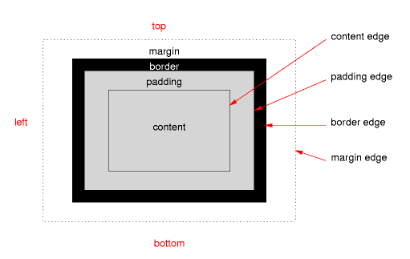
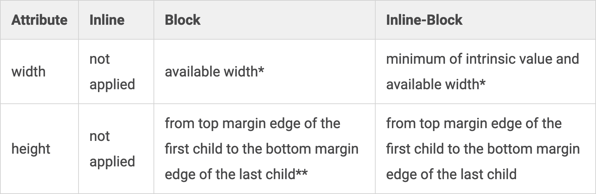
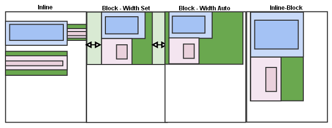

Blocks, Inlines, And The Box Model
Blocks and inlines are inherently different. It is not just a property that is toggled between these values; many other properties are affected by the display, the most important of which are probably those concerning the box model: width, height, padding, border, and margin. While they largely apply to both kinds of elements and have approximately the same meaning for both, the box model properties are calculated quite differently for inlines and blocks.
Here is the reference image from W3C regarding the box model:

There are a few problematic properties (float and positioning) that further alter the computations of the width, height and margins, but they are not subject of this article. It is recommended that you simply assume there are no floats in the document and all elements have position:static.
Replaced elements is yet another category of elements that might pose problems with regard to the box model. The content of such elements is replaced by an outside source and the rendering engine cannot decide their properties on its own. The three most common examples of replaced elements are img elements, iframes, and form elements. To give you a better idea, think of them as placeholders: when the document is rendered, these elements need outside help to be displayed. For example, instead of the img tag, the actual image resource is rendered. Replaced elements can be either inlines or blocks and they may or may not have intrinsic sizes (defined by the outside source – such as the width and the height of an image resource).
Here is how box model attributes are computed when they are set to auto:

*Available width is the value of the containing box width, minus the left and right paddings, borders, and margins. The containing box varies according to the position property. The containing box may be the content box of the parent (if the element is positioned static or relative), of the body (if positioned fixed), or of the closest ancestor with a position different than static (if positioned absolutely). This will be reiterated in a future article, when we’ll discuss about positioning.
**If block elements have overflow:visible, their height is computed as the distance between the top border edge of the first child and the bottom border edge of the last child.
Here is a short example to help you visualize the table above.

In all images, there is a green element with a blue and a pink child. The margins of each element are rendered with a lighter color. The width, height, and margins of the green element are set to auto, while the blue and pink elements have random non-0 values.